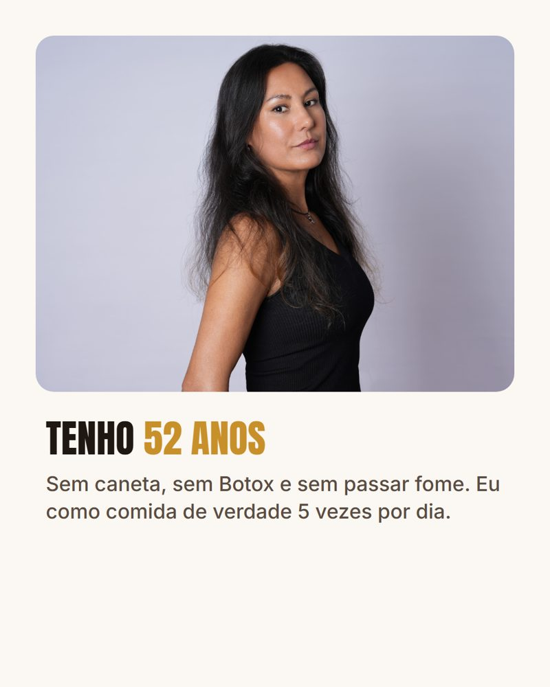

Como desinchar a barriga depois dos 40 comendo comida de verdade
Você sabia que a barriga inchada depois dos 40 pode ser inflamação, e não idade?
Responda 7 perguntas rápidas e descubra o seu nível de inflamação.
Com que frequência a sua barriga fica estufada?
Toque na resposta.
Onde mais você sente no corpo?
Pode marcar mais de uma.

Qual destes cafés da manhã é mais parecido com o seu?
Toque na foto.
O que você já tentou pra desinchar ou emagrecer?
Pode marcar mais de uma.
E quando você faz dieta, o que acontece?
Toque na resposta.
Qual é a sua idade?
Toque na resposta.
Montando o seu resultado...
- Lendo onde o inchaço aparece no seu corpo
- Cruzando com o seu café da manhã e o que você já tentou
- Separando o que comer e o que cortar
O que o teste mostrou
Este teste não é diagnóstico médico.
Assista ao vídeo e entre no Desafio Desinflamação gratuito
🔊 Confira se o som está ligado
Desafio Desinflamação: 7 dias comigo
- Uma aula por dia, às 7h, no grupo do WhatsApp
- O cardápio de cada dia, com comida de verdade
- 5 refeições por dia, sem passar fome
- As aulas ficam no grupo: dá pra assistir a que você perdeu
🔒 Este é o único link oficial · Nunca pedimos pagamento pelo Desafio
Você pode eliminar até 4kg em 7 dias*. *Resultado varia de corpo pra corpo. Não substitui acompanhamento médico.
Assista ao vídeo e veja o que comer e o que cortar pra desinchar
🔊 Confira se o som está ligado
Barriga Desinchada Depois dos 40: o que comer e o que cortar
- O que tirar do prato pra parar de inchar
- O que colocar no lugar, com comida de verdade
- Como montar as 5 refeições do dia sem passar fome
- Pra ler no celular, no seu ritmo
de R$ 97 por
R$ 47
pagamento único · sem mensalidade
Quero a minha cartilha🔒 Compra segura · Acesso enviado no seu e-mail · Garantia de 7 dias
O que você recebe
Os alimentos que desincham e dão energia, do café da manhã ao jantar.
O que inflama sem você perceber, mesmo quando parece saudável.
Como organizar o dia pra não passar fome e não beliscar à tarde.
No checkout você também pode levar o cardápio personalizado para mulheres 40+ com a lista de compras.
Quanto custa continuar tentando de outro jeito
A cartilha não substitui acompanhamento médico. Ela soma ao que você já faz, pelo prato.
Quem vai te ensinar
Sandra Guedes, 52 anos, diplomada pelo criador da Isodieta.
Leia, aplique e veja como o seu corpo responde. Se não fizer sentido pra você, peça o reembolso em até 7 dias e devolvemos 100% do valor, sem perguntas.
Perguntas frequentes
Preciso passar fome?
Não. São 5 refeições por dia, com comida de verdade.
Serve pra quem tem mais de 50?
Sim. A Sandra tem 52 anos e vive assim.
Como eu recebo?
Logo depois da confirmação do pagamento, o acesso chega no e-mail que você informar no checkout.
É assinatura? Vou pagar todo mês?
Não. É pagamento único, sem mensalidade.
Substitui o acompanhamento do meu médico?
Não. A cartilha é um complemento pelo prato. Não pare nenhum tratamento sem falar com o seu médico.
E se eu não gostar?
Você tem 7 dias de garantia. Se não fizer sentido pra você, devolvemos 100% do valor.
Você pode eliminar até 4kg em 7 dias*. *Resultado varia de corpo pra corpo. Não substitui acompanhamento médico.